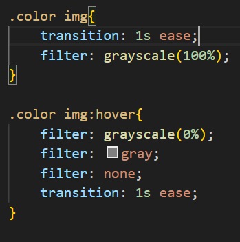

Adding Image Hover Effects to Your Website
When it comes to using CSS to style and design a website, there are nearly an infinite amount of ways to style and mold your creation into something truly special. CSS lets you control almost every single aspect of your website allowing you to express yourself and create something that not only you can be proud of, but also something that will impress anyone that visits your site.
What are Image Hover Effects? Image Hover Effects are a simple way to add depth and detail to an otherwise boring website. While some image hover effects can get very complex and turn into works of art on their own; they do not always have to be so complex. Sometimes simple is better and we do not want to take away from the main focus which is the picture/ image itself. This also means that even the most entry level beginners, such as myself, are able to add details that can greatly elevate the look and appeal of a webpage.
The first image hover effect we will take a look at is a fade in. The image will start off a grayed out, the gray scale has been turned up all the way to take the color away from the image. Then the user of the website can hover their cursor over the image and the gray scale will begin to fade and color will return to the image. Not only does this add a nice flair to an otherwise unaltered photo, it adds much more detail to the website that will impress anyone who views it as well as giving you a chance to show off your skill as a web page developer.
Fade In

If we take a bit of a closer look and breakdown how we achieve this, it is actually very simple CSS that any beginner can do. All we do essentially is create an element is CSS for the image and set it the grayscale to 100% so the image goes to black and white. We then add another element that is set to hover, so that if a cursor goes over the image, the grayscale is set to return to 0% over the course of 1 second to restore the color of the image. However, do not be discouraged if you do not get it working right the first time. The team at Brandmen Marketing Agency have provided great resources for anyone trying to learn and add effects to their webpage. They be found here for additional help.
Another very simple image hover effect is the shrink image effect. This one I feel not only provides a nicer aesthetic for images and websites, but it is also very practical when used correctly. Sometimes when we want to show off our images to their fullest, they are quite large and can be difficult to look at entirely. The shrink image hover effect makes it so the image can be shrunk down for a moment when someone holds their cursor over it allowing it to fit better as well as showing off your skill and professionalism as a developer. Again this one is very simple to achieve. All we are doing in the code is setting our image to its original scale then adding a transition that will shrink the image down to a smaller scale over the course of 1 second, then return to the original scale when the cursor is no longer hovering over the image.